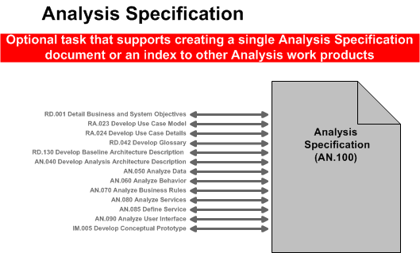

OUM |
Task Overview |
||
Method Navigation |
Current Page Navigation |
||
|
|
||||||||
The purpose of this task is to assemble all the information that is required to describe a use case package into a complete Analysis Specification, ready for review. In general, there would be one of these specifications written for each use case package on a project. Prior to being passed on to the designers, the Analysis Specification is reviewed for defects and, as necessary, the defects are corrected.
It is very important to note that executing this task is not a substitute for executing the individual Analysis tasks, specifically:
However, this specification task and its work product can serve as a structure for completing analysis of each use case package by providing pointers back into these Analysis tasks. Also, the Analysis Specification (AN.100) is not intended to specify individual software components or describe the design of those components. The decomposition of each “Analysis Package” into the software components that will be required to implement the functionality defined in the use-case package will happen during the Design process.
The High-Level Software Architecture (RA.035) included in the Architecture Description (RD.130) work product puts the system use cases into prioritized groupings called “Iteration Groups.” The priorities are based on a number of factors – including importance and risk – which ultimately determine the level of architectural significance of each use case. Higher priority Iteration Groups are, naturally, addressed in earlier iterations. Therefore, it may be that only a portion of the use cases in each use case package will be analyzed during a given iteration. This is an appropriate and recommended practice that helps to support the Risk-Focused and Architecture-Centric principles of OUM.
In a commercial off-the-shelf (COTS) application implementation, the Analysis Specification (AN.100) describes the overall functionality that must be provided by an extension or customization, expressed as a package of one or more Use Cases. The Analysis Specification (AN.100) will also describe how the package will integrate with the underlying commercial-off-the–shelf (COTS) software and will include descriptions of the user interface elements, data, and system behavior from the user’s perspective. The users must be able to understand the terms used to describe all business logic. Diagrams and examples can help clarify complex issues.
B.ACT.AE Analyze - Elaboration
C.ACT.AC Analyze - Construction
Analysis Specification
The Analysis Specification describes the functionality to be provided by a use case package (customization in case of COTS) in business and user terms.
Users, business analysts, and designers are the audience for this artifact. Therefore, it must communicate all the functionality to be provided by the use case package in non-technical terms.
You should follow these steps:
No. |
Task Step | Component | Component Description |
|---|---|---|---|
1 |
Prepare the Overview by describing the purpose of the use case package and listing the use cases within the package that is being described by this Analysis Specification. | Overview | The Overview describes the package, and a list of the use cases and actors that make up the use case package being analyzed. Use the package name as defined in the Conceptual View (AN.040) of the Architecture Description (RD.130). |
2 |
Provide traceability back to specific business objectives as documented in the Business and System Objectives (RD.001) work product. | Business Objectives | The Business Objectives highlight the objectives that relate to this package from the Business and System Objectives (RD.001). If your project is using the MoSCoW List (RD.045) to provide traceability back to the Business Objectives, you may also reference the MoSCoW List. |
3 |
Provide a summary of the use case descriptions for all use cases included in the package. | Major Features | Use the Use Case Model (RA.023) to list the use case name and the brief description. You may also reference the location of the RA.023 work product rather than re-state the brief descriptions in this work product. |
4 |
Provide a definition of any unique terms that may be required for the reviewer to understand this Analysis Specification. | Definitions | The Definitions specifically define any terms that the reader may require in order to understand the Analysis Specification you are preparing for this package. You may also reference the project Glossary (RD.042). |
5 |
Define the User interaction with the system interface, and all othecollaboratingr actors (systems, human, etc). | Scenarios | Reference the locations of the individual Use Case Specifications (RA.024) for the Use Cases included in this Package rather than re-state the details of the scenarios in this work product. If needed for clarification, you should include an additional section that provides real-world examples, with actual data. |
6 |
Provide an inventory of the Business Rules that are used by this package. | Business Rules | Consolidate, define, and describe each business rule that corresponds to the use cases contained in this package. If a Business Rules Analysis (AN.070) has been completed for your project, you may reference that artifact. Otherwise, the Use Case Specification (RA.024) for each use case may also contain Business Rule information in the Related Information section. |
7 |
List any overall assumptions that may impact the preparation of this Analysis Specification as it moves into Design. | Assumptions | Individual use cases already include lower-level assumptions for each use case within the package. List only the overall assumptions at the package level. |
8 |
Summarize the User Interface Descriptions for the package that will be provided in the subsections. | User Interface Descriptions | Provide a simple summary of User Interface Descriptions to be provided in the subsections in steps 8a and 8b. |
9 |
List and describe the user interface Surface Features that are required to support the package. | Surface Feature Descriptions (Form and Report Wireframes or a UI Feature List) | Surface features – Form/Report Wireframes or UI Feature Lists – documented in the User Interface Analysis (AN.090) may be referenced or reproduced here. You may also include or reference applicable elements of the Conceptual Prototype (IM.005) work product. |
10 |
Describe the User Interface Flows that apply to this package. | User Interface Flow Descriptions (Storyboards) | User Interface Flow Descriptions (Storyboards) documented in the User Interface Analysis (AN.090) and Conceptual Prototype (IM.005) may be referenced or reproduced here. |
11 |
Capture all of the data attributes associated with each of the use cases in the package. The standard and recommended approach is to use a UML class diagram to capture and express the data required to support the package. |
Data Analysis | At this level data should include entities, attributes with their minimum, maximum and default values, if they are mandatory or optional and comments. Also associations with roles, specialization/generalization and aggregation is specified. When the Data Analysis (AN.050) has been performed, you should include or refer to it for this package. UML Approach If you are using a UML approach, you should include or reference the Analysis UML Class Diagram created in Analyze Data (AN.050). This diagram will provide the data analysis information about the Use Case Package. If this is the case, exclude the individual Data subsections from the template. Non-UML Approach If you are not using UML, you may leave this section blank or include summary information. Then you should use the individual Data Analysis section. If none of this is available or if the data requirements are very simple, you may use the table provided in the template. |
12 |
Capture an analysis of the system behavior that will be required to support the package. The standard and recommended approach is to use a UML class diagram, and/or any of the behavior or interaction types of diagrams to capture and express the behavior required to support the package. |
Behavior Analysis | Behavior analysis can result in adding operations to data related classes, with additional attributes, associations, roles, responsibilities, specializations/generalizations and aggregations. Behavior can include operations, attributes, associations, roles, responsibilities, specializations and generalizations for each use case. Typically, behavior analysis also adds strictly behavior related classes. When the Behavior Analysis (AN.060) has been performed, you should include or refer to it for this package. UML Approach If you are using a UML approach, you should include or reference the Analysis UML Class Diagram created or extended during Analyze Behavior (AN.060). The latter task may also have added Analysis Activity Diagrams, Analysis Sequence Diagrams, or other types of behavior or interaction diagrams. These diagrams will provide behavior analysis information about the Use Case Package. If this is the case, delete the individual Behavior subsection from the template. Non-UML Approach If you are not using UML, you may leave this section blank or include summary information. Then you should use the individual Behavior Analysis section. You may use a functional decomposition, process mapping, or other acceptable notations to express this information. |
13 |
Provide analysis of the interfaces – components, other packages, and/or external systems – from the point of view of this package. | Interface Analysis | Describe the high-level exchange of messages and information from this package to other use case packages or external interfaces. Refer to or include the applicable portions of the Package Diagram and Sequence Diagram from the Architecture Description (RD.130). For simple use case packages, you may use the table provided in the template. |
The Analysis Specification collects the Analysis work products for a use case package into a single document. This equates roughly to the “functional design document” that was used in some older methodologies.
The following illustrates the various tasks where work products might be incorporated into the Analysis Specification.

The approach to preparing this work product is to gather the information from the work products of the other OUM tasks you completed and compile them into this single work product. Your project may not require that you have this full work product, as each individual task may have already produced the work product that was needed or the individual artifacts produced by the related tasks may be held in an artifact repository. Completion of this consolidated work product is important if remote resources will complete Design and Construction. This work product will be very important to describe and package the work for those who were not part of the onsite requirements and analysis teams. This work product may also be used as a simple reference to all of the other work products associated with the given use case package.
Prepare an overview of the use case package being described by this Analysis Specification. First, describe the purpose of the package in terms of its overall responsibility. Next, list the names of each use case within the package. You should review the results of the Analysis Architecture Description (AN.040) that are included in the Architecture Description (RD.130) work product to ensure that you have provided the correct name and a brief overview of the use case package.
Describe the Business Objectives that are satisfied by this use case package. Provide traceability back to the Business and System Objectives (RD.001) and to the MoSCoW List (RD.045) by listing each business objective that is satisfied by the use cases in this package. It is important that the relationship between the business objectives and the package is preserved, as the use case package will move into Design of components next.
Reference the Use Case Model (RA.023) in order to include the use case descriptions for each use case in the package. Be sure to include the most important features and goals of this use case.
Reference the project Glossary (RA.042) and the OUM Glossary to describe any specific acronyms or words that may not be familiar to those who are going to access the Analysis Specification. You may decide to repeat just those words in this section. In this way, everything that is needed to understand this use case package will be included in the Analysis Specification.
Reference the appropriate Use Case Specification (RA.024) for each use case within the use case package. In particular, focus should be placed on the Main, Alternate, and Exception flow, that describe the interactions between the actor(s) and the system for this specific function.
The intent of this section is to consolidate, define, and describe each business rule that corresponds to the use cases contained in this use case package. Refer to the Business Rules Analysis (AN.070) for the inventory of all business rules for the project. You may also refer to the Related Information section of the Use Case Specification (RA.024), which may also contain business rules related to the individual use cases.
The intent of this section is to summarize the overall assumptions for the package. Since the individual use cases already include lower level assumptions for each use case within the use case package, you should list only the overall assumptions at the package level, without repeating assumptions from the individual use case details.
The intent of this section is to list and describe all of the user interface elements – surface features (wireframes) and flows (storyboards) – that are needed to satisfy the requirements of the Use Case Package. You should provide a high-level description of each required item or a simple reference to wireframes and storyboards described in the User Interface Analysis (AN.090). You may also include or reference applicable items from the Conceptual Prototype (IM.005).
In this task, the terms “surface features” and “flows” have been chosen specifically to help characterize this work. It is not the intent of Analysis to design the specific screens and reports that will be required. The intent is simply to list and describe the user interface elements that will be necessary to satisfy the functional requirements documented in the use cases. It is likely that your understanding of the specific elements will begin to emerge and you will likely refer to these as forms, screens, reports, flows, etc. but you should avoid specifying layouts or detailed navigation.
The intent of this section is to capture the data attributes and behavior associated with each of the use cases within this package.
You may reference the Analysis Class Diagram, which resulted from Data Analysis (AN.050) and Behavior Analysis (AN.060), if this was created. In this case, you may delete the individual Data Analysis and Behavior Analysis sections of the Analysis Specification template.
If your project is small or you have not chosen to use a UML approach, you may choose to use another means of describing the data and behavior required for the package. Again, it is preferable to refer to the Data Analysis (AN.050) and Behavior Analysis (AN.060) work products, if available. To populate the Analysis Specification work product for smaller projects or simple use case packages, you may use a small data table to describe the data attributes and include a simple functional decomposition or process mapping to describe the behavioral elements. A blank data table is provided in the Data Analysis section of the Analysis Specification template.
The intent of this section is to describe all external interfaces (components; other packages and/or external systems) from this use case package point of view. This describes the high-level exchange of messages and information from the use case package to other use case packages or external interfaces. Refer to or include the applicable portions of the Conceptual Diagram and Sequence Diagram from the Architecture Description (RD.130) work product. For simple use case packages, you may use the table provided in the template.
This task has supplemental guidance that should be considered if you are executing a service based on the BPM Project Engineering view. Use the following to access the task-specific supplemental guidance. To access all BPM Project Engineering supplemental information, use the BPM Project Engineering Supplemental Guide.
This task has supplemental guidance that should be considered if you are doing a Siebel CRM implementation. Use the following to access the task-specific supplemental guidance. To access all Siebel CRM supplemental information, use the OUM Siebel CRM Supplemental Guide.
This task has supplemental guidance that should be considered if you are doing a Webcenter implementation. Use the following to access the task-specific supplemental guidance. To access all WebCenter supplemental information, use the OUM WebCenter Supplemental Guide.
This task involves the following method roles:
Role |
Responsibility |
% |
|---|---|---|
Business Analyst |
Gather the information from the work products referenced by this task, and compile the composite work product. For Applications Implementation projects, the application/product specialist would assume the role of the business analyst. If an Analysis (or other) team leader has been designated, the effort would be allocated between the team leader and the business analyst or application/product specialist. |
100 |
Ambassador User |
Validate that the use case details have been carried forward and the business requirements are satisfied by the analysis contents for each package. | * |
* Participation level not estimated.
You need the following for this task:
Prerequisite |
Usage |
|---|---|
Business and System Objectives (RD.001) |
Use the Business and System Objectives to provide traceability to the business objectives. |
MoSCoW List (RD.045) |
Use the MoSCoW List to provide traceability to project requirements. |
Architecture Description |
Use the Architecture Description to understand which use cases are included in this package and to understand the high-level exchange of messages between this use case package and other use case packages or external interfaces. |
Use Case Model (RA.023) |
Use the Use Case Model to gather or reference the use case descriptions. |
Use Case Specifications (RA.024) |
Use the Use Case Specifications to understand the major features and scenarios of each use case in the package. |
Data Analysis (AN.050) |
Use the Data Analysis or complete the Data Table in the Analysis Specification template to describe the data for each use case in the package. |
Behavior Analysis (AN.060) |
Use the Behavior Analysis to understand the system behavior that will be required to support the each use case in the package. |
Business Rules Analysis (AN.070) |
Use the Business Rules Analysis to reference the catalog of business rules for the system and to determine which business rules may apply to this use case package. |
Service Portfolio (AN.080) Service Definition (AN.085) |
Include the information in these work products If your project involves service-oriented architecture. |
User Interface Analysis (AN.090) |
Use the User Interface Analysis to understand the user interface surface features (wireframes) and flows (storyboards) required for each use case in the package. |
Conceptual Prototype (IM.005) |
Use the Conceptual Prototype to reference applicable user interface elements and prototypes that may be applicable to this use case package. |
The following templates and tools are available to assist with this task:
Template File Name |
Comments |
|---|---|
| MS Word |
Example |
Comments |
|---|---|
| Ski-NOW Case Study Recycled Packaging Rebate Processing Example |
The Analysis Specification is used in the following ways:
Distribute the Analysis Specification as follows:
Use the following criteria to check the quality of this work product:

Copyright © 2006, 2016, Oracle and/or its affiliates. All rights reserved.